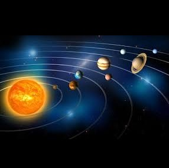

Општо за Сонцето и неговото значење за животот на Земјата
Сонце (латински: Sol) — ѕвезда од класата на жолти џуџиња која се наоѓа во центарот на Сончевиот систем. Земјата и друга материја (вклучувајчи други планети, астероиди, метеороиди, комети и космичка прашина) орбитираат околу Сонцето, кое самото претставува 98,6% од целовкупната маса на сончевиот систем, а тежи околу 200.000 пати повеќе од Земјата.
Растојанието меѓу Сонцето и Земјата е приближно 149.600.000 километри и неговата светлина го минува ова растојание за 8,3 минути. Енергијата од Сонцето, во форма на сончева светлина, го одржува скоро целиот живот на Земјата преку фотосинтеза и ја управува земјината клима и време.
Сонцето порано било побледо и тоа е причината поради која животот на Земјата постои околу милијарда години на копно. Зголемувањето на сончевите температури е такво што за околу милијарда години површината на Земјата ќе биде толку жешка што течна вода нема да постои што ќе доведе до крај на Земјата.

Сончевото зрачење, во најширока смисла, е целосниот спектар на електромагнетна радијација која ја испушта Сонцето. На Земјата, сончевото зрачење се филтрира низ Земјината атмосфера, а соларна радијација гледаме кога Сонцето е над хоризонтот. Сончевото зрачење може да се измери со помош на апарат наречен пиранометар или пирхелиометар. Светската метеоролошка организација ја дефинира сончевата светлина како директно зрачење од Сонцето врз Земјата со најмалку 120 Њ•м−2.
Директното сончево зрачење има светлосен ефект од околу 93 лумени на ват, што вклучува инфрацрвено зрачење, видлива светлина и ултравиолетово зрачење. Сјајната сончева светлина има околу 100 000 кандели на квадратен метар на површината на Земјата. Опстанокот на речиси сите животни форми на Земјата зависи од сончевата светлина. Растенијата ја користат сончевата светлина за процесот наречен фотосинтеза.
Животните индиректно ја користа сончевата светлина, преку внесување на растенија во својата исхрана. Релативно скорешните откритија на јаглен, петролеум и природен гас преставуваат употреба на сончевата светлина заробена во земјата милиони години.
Јадрото на Сонцето е најважниот дел од него. Тоа е како мотор. Тој ја дава светлината, и тој ги дава тие честички внатре во Сонцето. Секогаш кога Сонцето свети, испушта енергија околу милион атомски бомби.Јадрото на Сонцето се смета дека се протега од центарот до 0,2 до 0,25 сончеви радиуси. Густината изнесува од 150 g/cm3 (150 пати повеќе од густината на водата на Земјата), а температурата изнесува приближно 13 600 000 К (додека на површината на Сонцето изнесува околу 5 800 К).
Јадрото е единственото место во Сонцето кое што произведува значително количество на топлина преку фузија: остатокот од ѕвездата се загрева со енергија која што се пренесува надвор од јадрото. Севкупната енергија добиена со фузија во јадрото мора да патува преку многу последователни слоеви до сончевата фотосфера пред да се ослободи во вселената како сончева светлина или кинетичка енергија на честичките.
Фотосферата е површината на Сонцето. Површината не е толку цврста, како што се другите делови, а и испушта гасови. Температурата на површината достига до 10.000 °C
Видливата површина на Сонцето, фотосферата, е слој кој го прави Сонцето видливо на светлина. Над фотосферата видливата сончева светлина слободно може да се шири во вселената и нејзината енергија целосно го одбегнува Сонцето.
Деловите од Сонцето кои се наоѓаат над фотосферата се сите заедно наречени сончева атмосфера. Тие може да се видат преку телескопи кои оперираат низ електромагнетниот спектар, од радио преку видлива светлина до гама-зраци, и кои вклучуваат пет основни слојни: најниската температура, хромосферата, преодното подрачје, короната и хелиосферата.
Сонцето главно е составено од хемиските елементи водород и хелиум. Тоа содржи 74,9% водород и 23,8% хелиум. Сонцето содржи помалку од 2% од повеќето потешки метали кои се нарекуваат метали во астрономијата како што се кислород (околу 1%), јаглерод (0,3%), неон (0,2%) и железо (0,2%).
Сонцето го наследило својот хемиски состав од меѓуѕвездената средина од која што и се создало: водородот и хелиумот во Сонцето се создале со Биг Бен нуклеосинтеза. Хемискиот состав на фотосферата вообичаено се смета за претставник на првобитниот состав на сончевиот систем. Сепак, откако е создадено Сонцето, хелиумот и тешките метали се отселиле од фотосферата. Поради тоа, фотосферата сега содржи помалку хелиум и само 84% од тешките метали отколу што содржело првобитното Сонце. Првобитното Сонце содржело 71,1% водород, 27,4% хелиум и 1,5% метали.
Во внатрешните делови на Соцето, нуклеарната фузија го модифицирала составот со претворањето на водородот во хелиум, така што највнатрешниот дел на Сонцето сега содржи околу 60% хелиум, со тоа што процентот на метали останал непроменет.
Изобилството на горенаведените тешки метали вообичаено се мерат со спектроскопија на фотосферата на Сонцето и со мерење на метеоритите кои никогаш не биле загреани до топење. Се смета дека овие метеорити го имаат истиот состав како и првобитното Сонце и поради тоа остануваат непроменети иако содржат тешки метали.
Дознај повеќе за Сонцето